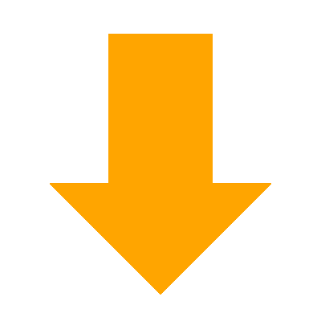
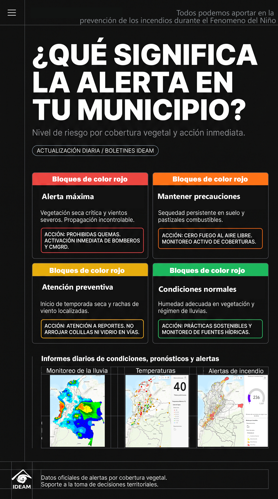

Monitoreo de alertas por incendios - IDEAM y puntos de calor detectados satelitalmente en su municipio
¿Cómo usar este visor?
Busca o selecciona cualquier municipio para consultar su nivel de alerta y focos de calor en tiempo real
Herramientas

Toca o desliza para ver los resultados en el panel
Notificación
Operación realizada con éxito.
Filtre las fechas del monitoreo
Septiembre 2026
Dom
Lun
Mar
Mié
Jue
Vie
Sáb
HERRAMIENTAS Y PANELES
Leyenda del Mapa
Simbología y niveles de alerta IDEAM
Guía de Uso
Instrucciones y enlaces oficiales IDEAM/NASA
Generar Reporte PDF
Informe técnico oficial descargable
Leyenda del Mapa
Guía de Uso del Visor

GENERAR Y EXPORTAR REPORTE PDF
Reporte Ejecutivo Territorial • Ficha de Alerta
📷 Captura Visual del Mapa Web
Generar captura de pantalla en alta resolución con el municipio seleccionado.
📊 Ficha de Indicadores & Pop-up Nativo
Incluir la tabla detallada de alertas IDEAM, conteo VIIRS y datos DANE.
🗓️ Rango de Fechas Satelitales y Leyenda
Incluir los filtros de fecha activos y fuentes oficiales (IDEAM / NASA VIIRS).